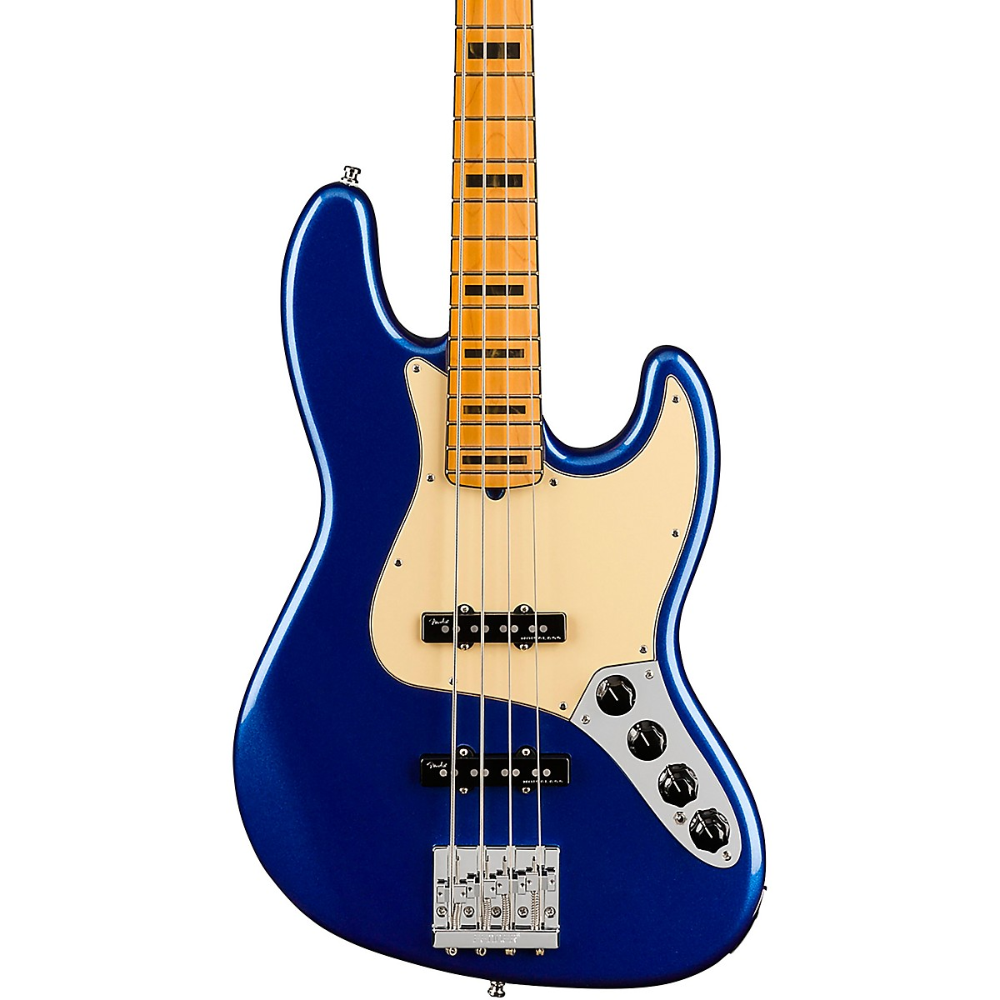

KLEV ÆRIA Bass
The KLEV ÆRIA is am innovative, superlight concept bass developed for live performances.
Each T-Custom guitar is 100% made to order, starting from KLEV's signature paint job, all the way to the very bolts used to assemble the guitar. Imagination is the only limit to what a T-Custom guitar can be.
Crafted to highly exact standards using cutting-edge industrial processes, KLEV T-Custom guitars guarantee clean, pitch perfect playing and amazing note sustain matching the best limited-series guitars, for a fraction of the price.
For the discerning guitar player who wants something truly unique both in terms of looks and sound, there is nothing like the T-Custom.